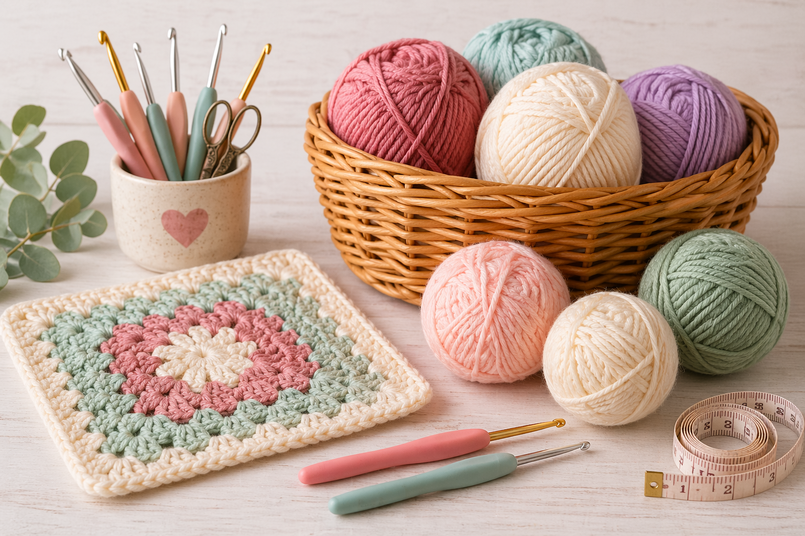

Yarn Basics
Yarn is the essential material used in crochet, and it comes in a wide variety of colors, weights, and textures. The type of yarn you choose can significantly affect how your project feels and turns out. Learning the basics of yarn selection will help beginners choose the right material and feel more confident when starting a new project.
| Weight | Number | Description | Common Uses | Beginner Friendly? |
|---|---|---|---|---|
| Lace | 0 | Very thin and delicate | Doilies, shawls | No |
| Super Fine | 1 | Thin yarn | Socks, baby clothes | No |
| Fine | 2 | Lightweight yarn | Light sweaters, garments | Sometimes |
| Light | 3 | Light but easier to see | Baby items, light scarves | Yes |
| Medium | 4 | Standard yarn size | Blankets, scarves, hats | Best for beginners |
| Bulky | 5 | Thick yarn | Scarves, blankets | Yes |
| Super Bulky | 6 | Very thick yarn | Chunky blankets, quick projects | Yes |

| Label Information | Details |
|---|---|
| Length & Weight | 160 YDS / 3 OZ – 146 M / 85 G |
| Color / Name | Hot Sunshine Speckle |
| Lot Number | 43 |
| Yarn Weight | 4 (Medium) |
| Fiber Content | 100% Acrylic |
| Recommended Hook | 5 mm (US H/8) |
| Care Instructions | Machine wash cool, lay flat to dry |